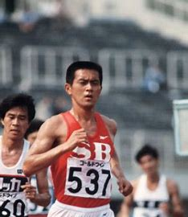
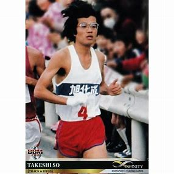
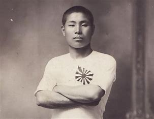
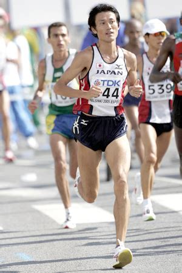
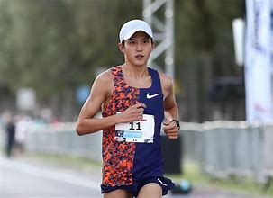
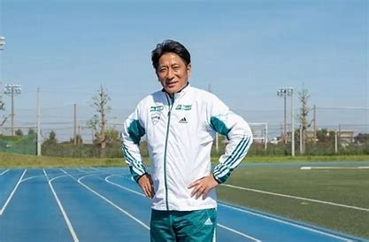
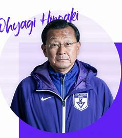

箱根駅伝クイズ
箱根駅伝に関わるクイズを10問出題！何問正解できるかな！？
問題１ 箱根駅伝創設に関わった「マラソンの父」とは誰？



問題2 箱根駅伝で「エース区間」として「花の〇区」と呼ばれる区間は？
問題3 出場大学のうち歴代優勝回数が最も多い大学は？
問題4 次のうち箱根駅伝から世界に羽ばたいたマラソンランナーはだれ？


問題5 箱根駅伝の「山の神」を古い順から並べたものは？
問題6 箱根駅伝に出場したことのある漫画家はだれ？
問題7 箱根駅伝でよく流れるビールのCMは？
問題8 毎年恒例となった青山学院大・原晋監督による作戦名発表。初優勝を果たした際の作戦名は？

青山学院大 原監督
問題9 2023年度まで駒澤大学を率いた大八木弘明監督の代名詞ともいわれる声掛けは？

駒澤大学 大八木監督
問題10 同期の武井隆次、花田勝彦らとともに早稲大三羽鳥と呼ばれ、現城西大学の監督はだれ？